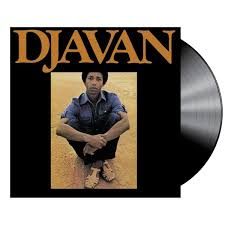
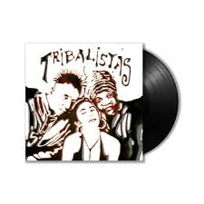
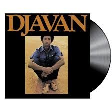
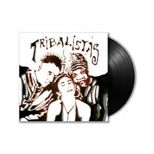

O poder da MPB: como a música popular brasileira segue influenciando gerações e moldando o som do mundo
A Música Popular Brasileira, mais conhecida como MPB, continua sendo um dos maiores símbolos culturais do país e uma das expressões musicais mais ricas do mundo. Nascida na década de 1960, em meio a um cenário de transformações políticas e sociais, a MPB surgiu como uma fusão de ritmos nacionais — como o samba, a bossa nova, o baião e o choro — com influências internacionais, criando um estilo único, poético e profundamente ligado à identidade brasileira. Com nomes como Elis Regina, Chico Buarque, Caetano Veloso, Gilberto Gil e Maria Bethânia, a MPB marcou gerações ao unir arte e resistência, poesia e crítica social. Suas letras falam de amor, liberdade e política, refletindo os sentimentos e as lutas do povo brasileiro. Mesmo com o passar dos anos, o gênero segue vivo e influente, inspirando novas vozes da música contemporânea como Anavitoria, Liniker, Tim Bernardes e Marisa Monte, que atualizam a sonoridade sem perder a essência.O impacto da MPB vai além das fronteiras do Brasil. Suas harmonias sofisticadas e letras intensas conquistaram artistas e ouvintes em diversos países, sendo reconhecida internacionalmente como uma das expressões musicais mais autênticas do planeta. Plataformas de streaming mostram um crescimento constante no interesse por clássicos e novas produções do gênero, revelando que a MPB continua tocando corações e construindo pontes culturais.Mais do que um estilo musical, a MPB é parte viva da história do Brasil — um espelho da alma nacional que, mesmo em tempos de mudanças, continua a ecoar com força, emoção e verdade.

A Música Popular Brasileira, a famosa MPB, nasceu nos anos 1960, quando nomes como Elis Regina, Gilberto Gil, Chico Buarque e Caetano Veloso decidiram usar a arte como forma de expressão, liberdade e reflexão. Misturando ritmos como samba, bossa nova e baião, eles criaram um som autenticamente brasileiro — cheio de emoção, poesia e identidade. Era música feita para pensar, sentir e se conectar com o país.Décadas depois, o gênero continua mais vivo do que nunca. Uma nova geração de artistas está renovando a MPB, sem perder suas raízes. Nomes como Anavitoria, Liniker, Rubel, Tim Bernardes e Marina Sena trazem uma nova roupagem ao estilo, misturando pop, indie e até eletrônico. Com letras sinceras e temas que falam sobre amor, rotina, autoestima e sentimentos reais, essa nova cena musical reflete o cotidiano e a sensibilidade do público jovem, mostrando que a MPB segue em constante evolução.Ao mesmo tempo, os grandes nomes continuam sendo referência e inspiração. Gilberto Gil, Caetano Veloso, Maria Bethânia e Milton Nascimento seguem conquistando gerações e provando que boa música não envelhece. Suas canções continuam presentes em playlists, trilhas de séries e nas redes sociais, mantendo viva a essência da MPB.Mais do que um gênero musical, a MPB é parte fundamental da cultura brasileira. Ela conecta o passado ao presente, une o clássico ao moderno e mostra que a arte nacional segue forte, pulsante e cheia de voz. Para quem busca músicas com letra, alma e história, a MPB é o som que nunca sai de moda — e que sempre encontra novas formas de emocionar.
  
 